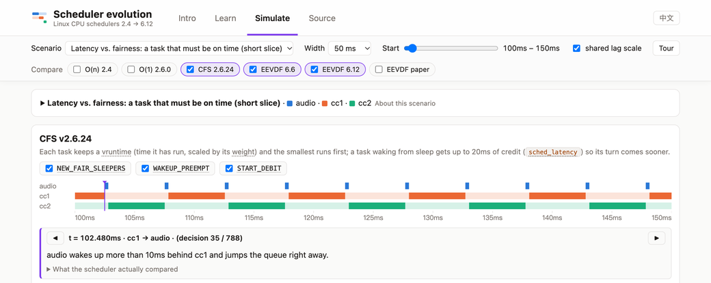
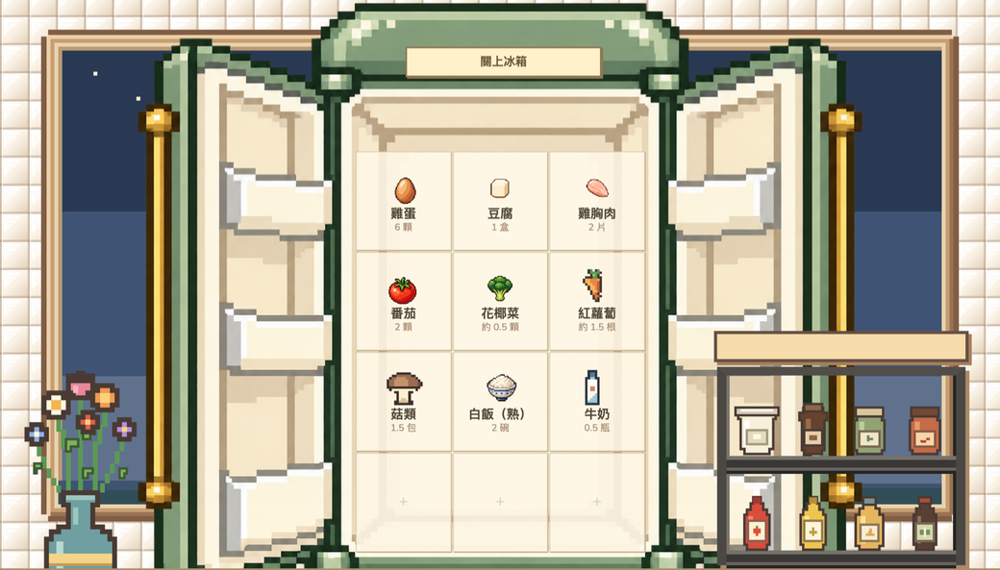
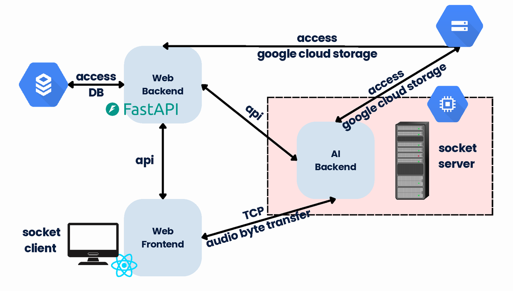
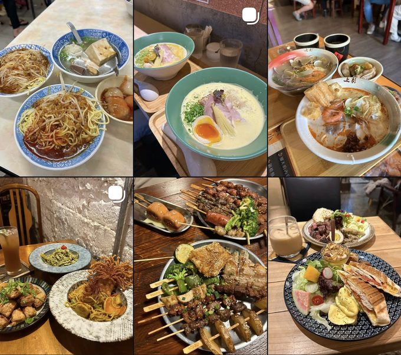

Nora Lin
I'm a master's student in Computer Science at UC San Diego, graduating in March 2027. I'm interested in operating systems and the infrastructure behind ML.
I'm looking for new-grad software engineer roles, and I'm also open to systems software and AI engineering.
Experience
TSMC
Jul – Aug 2025National Cheng Kung University
Sep 2024 – Jan 2025Appier
Apr – Nov 2024Education
UC San Diego
Sep 2025 – Mar 2027 (expected)National Cheng Kung University
Sep 2021 – Jun 2025Projects
A browser simulator that runs the same workloads through five generations of the Linux CPU scheduler, from O(n) in 2.4 to EEVDF in 6.12, and explains each decision next to the kernel source.

Pocket Fridge 2026
Live siteA web app that suggests dinner from what's in your fridge, deployed on AWS with Terraform. Snap a receipt or your groceries and AI fills the fridge for you, then each suggestion shows what you have, what's missing, and what to use up before it spoils. Best viewed on a phone.

SCHOLAR 2026 – present
SourceA harness for a six-agent automated research framework. I evaluate its ideation agent with LLM judges.
Paper: Which Errors Change an LLM Judge’s Score? Planted Errors in Automated Evidence Synthesis (manuscript in preparation), the first study in SCHOLAR's evaluation series.
Deep learning framework and distributed inference 2026
UCSD CSE 291AA small deep learning framework with autodiff and Transformer operators, tensor- and expert-parallel inference over MPI, and a fused Triton kernel.
Demystifying the Linux CPU Scheduler 2025
With Prof. Jim Huang, NCKUResearch on GPS, CFS and EEVDF, from the papers and the kernel source, for a book draft on the Linux CPU scheduler.
GGWhisper 2025
SourceReal-time multilingual speech translation. Runner-up at the 2025 TSMC IT Hackathon. I built the full-stack web app, from the React frontend to the FastAPI backend.

YEGO 2024
SourceA rebuild of NCKU's campus learning platform with FastAPI and React. I led a team of seven at Google Developer Student Club.
Just for fun
yumyum_tb
InstagramI was lucky enough to spend my college years in Tainan. This is my little Taiwan travel guide from those years, though honestly it's mostly me eating my way around Tainan.

Anime, drawing and music
When I'm away from the keyboard, you'll probably find me watching anime or doodling in Goodnotes, usually with music playing.


On repeat lately